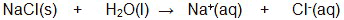
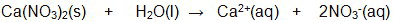
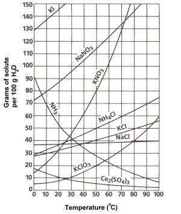
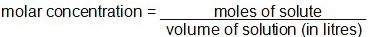
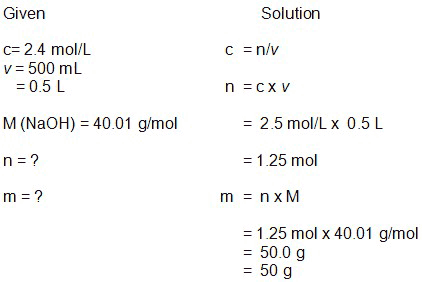
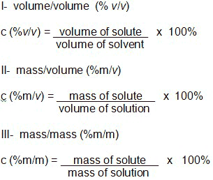
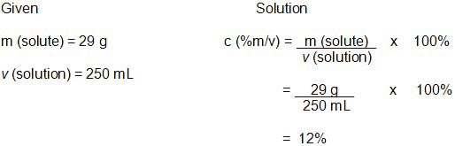

Unit 4: Solutions and Solubility
Activity 2: It’s a Mixing Thing
Content
In addition to dissolving polar molecules, water dissolves ionic compounds. The oxygen atom of the water will attract cations (positive ions) and the hydrogen atoms will attract the anions (negative ions).

|
Watch the interactive simulation Sodium Chloride dissolving in water. Please be aware, that, depending on your Internet connection speed, all clips on this page may take a few minutes to download. You can always continue reading the remainder of this page while you wait. |
|---|
The reaction between water and an ionic compound to produce an aqueous solution is called dissociation. An example of this is as follows:

The dissociation of calcium nitrate in an aqueous solution is:

 Question
Question
- Show the dissociation reaction of aluminum nitrate in water.
 Answer
Answer
Non-polar molecules have an equal distribution of charges within their respective molecule and they do not dissolve in water. They are immiscible with water. Non-polar molecules produce relatively weak intermolecular forces of attraction and repulsion that are called London dispersion forces. Even though polar molecules have strong intermolecular forces of attraction and repulsion, non-polar molecules are not attracted to the polar molecules. As the saying goes, “Oil and water do not mix.” On the other hand, non-polar molecules are miscible with non-polar molecules. Remember: “like dissolves like”.
Effect of Temperature and Pressure on Solubility
Examine the solubility curve graph and answer the following question:

Question
- What effect do higher temperatures have on the solubility of a gas and a solid?
Answer
Higher temperatures make particles move faster. The lower solubility of gases at higher temperatures is the result of the gases moving faster and escaping from the liquid. For solids, it is a different story. The ionic bonds, or the intermolecular bonds, of molecular solids are broken to a greater degree at higher temperatures, resulting in a higher solubility. Changes in pressure do not affect the solubility of a solid in a solvent. However, pressure plays an important role in the solubility of a gas in a liquid. Higher pressures on a solution will keep the gas dissolved in the liquid. The solubility is higher. Lower pressures will allow the gas to escape. The solubility of a gas will therefore be lower. For example, a carbonated drink is bottled under pressure. Removing the cap will decrease the pressure. In turn, the solubility of the gas will be decreased and the gas can escape. |
Concentrations and Calculations
The concentration of a solution can be described either quantitatively or qualitatively. A qualitative description uses the terms dilute or concentrated. A dilute solution denotes a low percentage of a solute in the solution. A concentrated solution indicates a high percentage of solute in the solution.
There are several quantitative expressions of concentration. Three common types are molar concentration, percent concentration, and parts per million or parts per billion.
Molar Concentration
Molar concentration is a very common concentration calculation in the chemistry laboratory. Its formula is as follows:

 Example
Example
A chemist needs to make a 500 mL of a 2.5 mol/L molar concentration of sodium hydroxide, NaOH. Determine the mass, in grams, of sodium hydroxide needed for this solution preparation.
 Sample Solution
Sample Solution
(Mass is not a part of the molar concentration equation. Moles are a part of the equation and so the moles of sodium hydroxide have to be determined first. The moles will then be converted into mass.)

Question
- Calculate the molar concentration of 0.50 mol of sodium chloride, NaCl, dissolved in 300 mL of solution.
Answer
Percent Composition
Three common percent composition categories are:

Example
A popular orange drink contains 29 g of sugar. What percentage composition (%m/v) of sugar would there be in a 250 mL drink?
Sample Solution

Question
- Vinegar is composed of about 5% (%v/v) acetic acid. Determine the volume of acetic acid in a 500 mL bottle.
Answer
This is a disclaimer. External Resources will open in a new window. Not responsible for external content.
Unless otherwise indicated, all images in this Activity are from the public domain or are © clipart.com or Microsoft clipart and are used with permission.